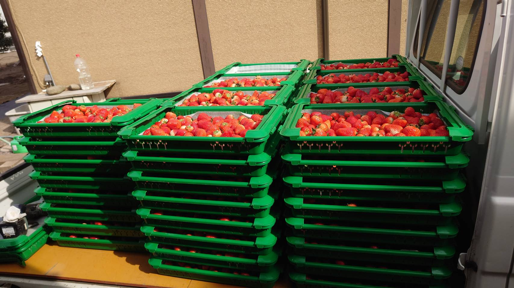
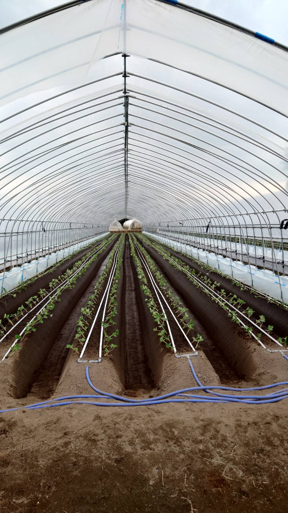
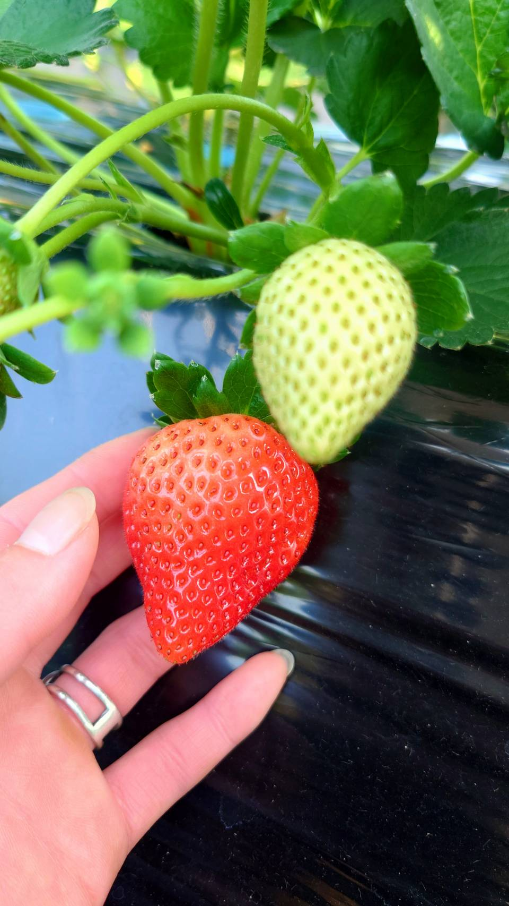
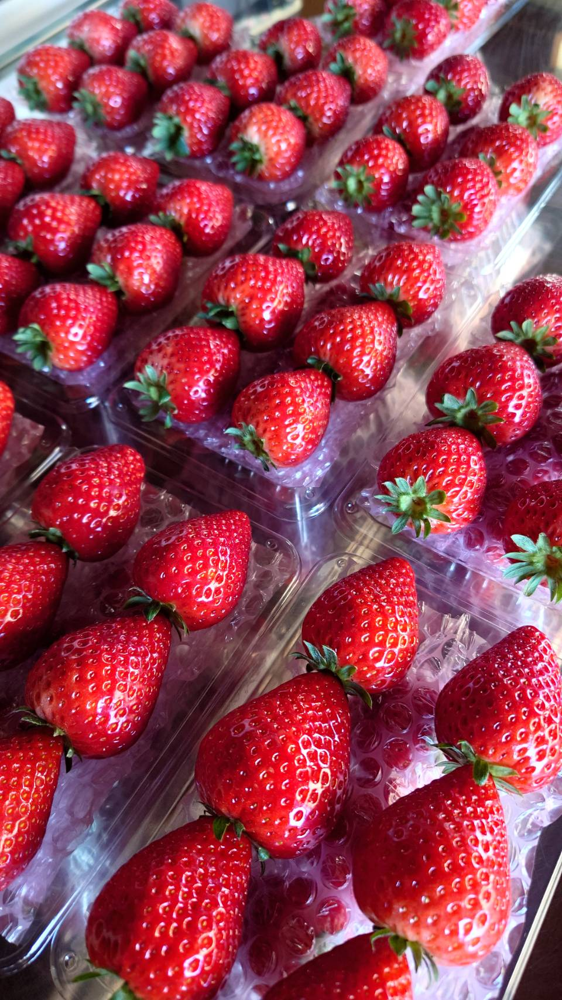
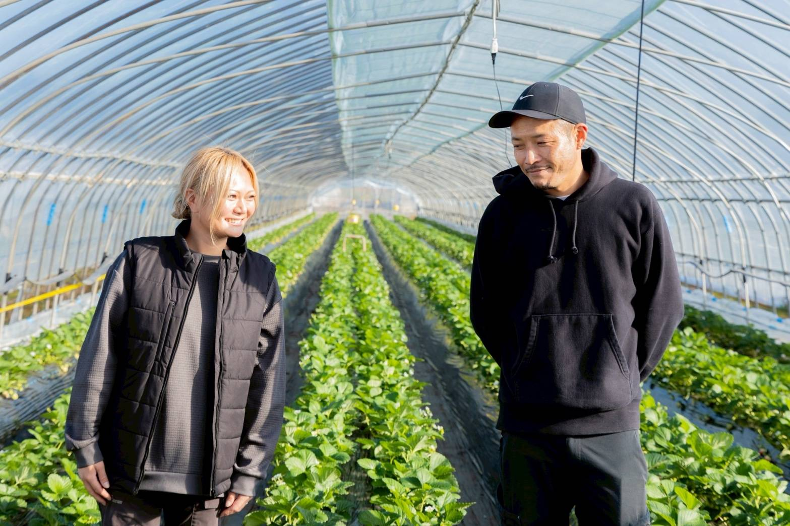

一粒一粒と向き合う日々の積み重ねが、
最高のいちごを生み出します。
山崎農園が目指すのは、「ただ育てること」ではありません。
土壌の声を聞き、植物の状態を読み取り、気候と対話しながら、
最良のタイミングで最良のいちごをお届けする——
そのための技術と情熱を、私たちは日々磨き続けています。
一粒一粒に向き合い、
最高のいちごを育てるための
4つのこだわりがあります。
土壌分析にもとづいた、生育ステージごとの最適な施肥設計。
機械に頼らず、農家の目と手で全株を毎日見守ります。
直売所と業務用、同じ基準。約束した量を確実に。
必要最小限の農薬、生物的アプローチ、次世代への土地。

土から生まれる、
最高の甘さ。

良いいちごは、良い土壌から生まれます。山崎農園では、専門機関による定期的な土壌成分分析を実施し、いちごの生育ステージに合わせた最適な肥料設計を行っています。
「数値だけでなく、土の感触も
判断の大切な基準です」

機械やセンサーには代えられない、農家の目と手による点検を毎日欠かしません。株の色、葉の張り、実の膨らみ具合——一つ一つ確認しながら、異変を早期に察知します。
「毎日見るからこそ、
ほんのわずかな変化に気づける」

業務用途では「味が良いだけ」では不十分です。同じ品質のものを、約束した量で、確実に届けること——それが山崎農園が業者様からご信頼いただける理由です。
「品質基準は、
直売所でも業者向けでも変えません」

農家は、土地の守り手でもあります。山崎農園では農薬使用を必要最小限に抑え、土壌の生命力を損なわない農業を実践しています。次世代へ、豊かな農地を引き継ぐために。
「おじいちゃんから受け継いだ土地を、
次の世代に渡したい」